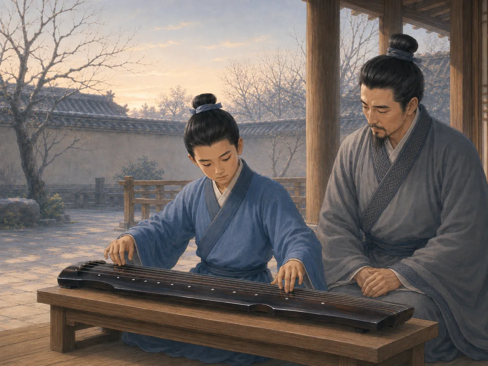

六艺：为什么射箭、音乐和算术要一起学？
The Six Arts: Why Learn Archery, Music, and Math Together?
Page 1
一张很不一样的学习清单
A Very Different School List

A young archer practices at dawn.
音乐和算术放在一起，好像并不奇怪。再加上写字，也很容易理解。可是接下来，居然还有射箭和驾战车。
古书Zhōulǐ · 记述古代官制与礼制理想的经典文献。里列出了六种学习和练习的本领：礼、乐、射、御、书、数，合起来就是“liù yì · 古代礼制文献中的教育分类：礼、乐、射、御、书、数。”。而且每一项下面还分成不同内容，所以它们当然不是一天里排好的六节小课，而是需要长期练习的六个大领域。
今天再看这个名单，会觉得它把完全不同的东西放在了一起。音乐大概应该去音乐教室，算术坐在桌前学，射箭可以去运动场，可“驾战车”已经完全不会出现在今天的课程表里了。不过，六艺原本要培养的，是生活在另一个时代的人。
Music and math on the same list do not sound very strange. Writing makes sense too. Then come archery and chariot driving.
An ancient Chinese book called the Zhōulǐ · 《周礼》 · An ancient classical text describing an ideal system of offices, rituals, and education. lists six areas of learning: ritual, music, archery, chariot driving, writing, and calculation. Together they were called the liù yì · 六艺 · An ancient educational grouping of ritual, music, archery, chariot driving, writing, and calculation.. The book even divides each one into smaller groups, which tells us these were not six little lessons to squeeze into one school day. Each was a skill that took practice.
The list feels unusual today because it mixes things we now put in completely different places. Music might belong in an arts classroom, math at a desk, archery on a sports field, and chariot driving nowhere in school at all. But the Six Arts were trying to prepare a person for a very different world.
Page 2
礼和乐：学会和别人一起行动
Ritual and Music: Learning to Act Together

A young learner practices the qin with his teacher.
第一项“礼”，并不只是今天说的“有礼貌”。古代很多重要场合都有自己的规矩。来了宾客应该怎样接待，参加仪式应该站在哪里，什么时候行礼，遇到丧事、朝会或者军事活动又应该怎样行动，都属于“礼”的世界。
“乐”也不只是一个人坐下来弹一首曲子。它可以包括乐器、歌唱和舞蹈，而且常常和各种仪式连在一起。所以，礼和乐都不是只靠背书就能学会的。人要听、要看、要记住节奏和顺序，还要知道怎样和身边的人一起行动。
接下来，就轮到弓箭了。
The first art, lǐ, is often translated as “ritual.” It was much more than being polite. Important occasions had their own ways of doing things. Guests had to be received properly. Ceremonies had an order. Mourning, court meetings, and military events all had expected forms of behavior. A person had to know where to stand, when to move, and how to behave around other people.
Music belonged to this world too. Yuè could include instruments, singing, and dance. Ancient performances were often group activities connected with ceremonies rather than simply one person sitting alone and playing a beautiful tune. So the first two arts already asked for something beyond memorizing facts. A learner had to listen, move, remember patterns, and work with other people.
Then the bow came out.
Page 3
弓箭和缰绳
The Bow and the Reins

A chariot driver controls the reins, coordinating horses, wheels, speed, and direction.
“射”就是射箭。拉得动弓当然需要力气，可光有力气还不行。身体要站稳，手要控制好弓弦，还要判断距离、瞄准目标，在合适的时候把箭放出去。
后来Lǐjì · 记载古代礼仪、制度和思想的重要典籍。讲射箭时，还用它来说一个很有意思的道理：如果箭没有射中，不要先怪那个比自己射得好的人，而是回过头来看看自己哪里需要调整。
“御”则是驾驭马拉的战车。对今天的小朋友来说，这大概是六艺里最陌生的一项。不过在Shāng-Zhōu · 商代和周代，战车在战争与贵族生活中都很重要。，战车既用于战争，也和国君、贵族的身份密切相关。让马匹、缰绳、车轮和方向配合起来，本身就是一种复杂的本领。学习射和御的时候，人当然不可能安安静静坐在屋子里。身体也得跟着脑子一起学。
Shè meant archery. A good archer needed strength, but strength alone was not enough. The body had to be steady. The bow had to be drawn smoothly. The archer had to judge distance, aim, and release at the right moment.
Later ritual writers even used archery to talk about how a person handled failure. The Lǐjì · 《礼记》 · An important classical work about ancient ritual, institutions, and ideas. says that when an archer misses, he should not blame the person who did better. He should look back at himself and think about what he could correct.
Then there was yù: driving a horse-drawn chariot. This may be the strangest of the Six Arts to a child today, but chariots were important in the world of the Shāng-Zhōu · 商周时代 · The Shang and Zhou periods, when chariots were important in warfare and elite life.. They were used in warfare and were also closely connected with powerful rulers and nobles. Controlling horses while keeping a wheeled vehicle moving in the right direction was a serious practical skill. A learner practicing these two arts was not sitting quietly at a table. The body had to work along with the mind.
Page 4
毛笔和数字
A Brush and Some Numbers
不过，有些本领确实要坐下来练。“书”和识字、书写有关。古代没有今天这样的练习本，人们可以用毛笔蘸墨，把文字写在一条条zhújiǎn · 把文字写在竹片上，再用绳子编联起来的古代书写材料。上，再把竹简编在一起。毛笔本身在纸普遍使用以前就已经出现了。
会写字不只是为了写一篇漂亮文章。官府要留下记录，要传递命令，要记下人名和各种事情，都离不开文字。
“数”则和计算有关。量土地、数粮食、分东西、做工程，都要用到数字。后来中国数学里还长期使用一种叫suànchóu · 古代用来表示数字和帮助计算的小棍。的小棍，把数字一根一根摆在桌面上来帮助计算。于是，六艺的一边有弓箭、马车、音乐和仪式，另一边却又放着毛笔和数字。古人并没有觉得这些一定属于完全不同的人。
Eventually, though, it was time to sit down. Shū was connected with writing and knowledge of written forms. In early China, texts could be written with brush and ink on narrow zhújiǎn · 竹简 · Narrow bamboo strips written on and tied together as an ancient writing material., which were then joined together. Ancient brushes had already been developed long before paper became common.
Writing mattered because governments ran on records. Names had to be written down. Messages had to be read. Decisions and supplies had to be recorded.
Then came shù, calculation. Numbers were needed whenever people measured, counted, divided, built, stored grain, or managed goods. In later Chinese mathematics, small suànchóu · 算筹 · Small rods used to represent numbers and carry out calculations. became an important way to arrange numbers and carry out calculations on a flat surface. So one side of the Six Arts had bows, horses, music, and ceremony. Another had brushes and numbers. The ancient list did not see those things as belonging to completely separate kinds of people.
Page 5
为什么六样都要学？
Why Put All Six Together?
《周礼》有一处说，负责教育的官员要把这些本领教给“guózǐ · 《周礼》中与统治阶层关系密切、接受教育的年轻人。”，也就是和当时统治阶层关系密切的年轻人；书中另一个地方，又把六艺放进了更广泛的教化理想里。这并不是说古代每一个孩子都进入同样的学校、拥有同样的老师和器材。光是学习驾车，就要有马、有车，也要有足够大的地方。
可是，这张古老的学习清单还是很有意思。一个准备承担重要事情的人，不只是要会读书写字。他还可能需要计算，会控制自己的身体，懂音乐和礼仪，能够使用弓箭，也知道怎样驾驭车马。
所以，把六艺放在一起看，会出现一幅很特别的画面。一边是毛笔，一边是弓箭；这里放着乐器，那里牵着马；桌上还有数字。在今天，它们好像属于好几种完全不同的课程。在六艺里，它们却属于同一种教育。
The Rites of Zhou says that one official was responsible for teaching these arts to guózǐ · 国子 · Young people connected with the ruling elite who receive instruction in the Rites of Zhou., young people connected with the ruling elite. Another passage puts the same Six Arts into a wider plan for educating the population. This does not mean every child in ancient China went to the same school and learned all six. A chariot alone required horses, equipment, space, and people who knew how to teach it.
But the list tells us something interesting about what education could mean. A well-prepared person was not supposed to know only how to read. He might also need to calculate, control his body, listen to music, handle a bow, manage horses, and know how to behave when many people had to act together.
That is why the Six Arts still look so surprising. Put a brush beside a bow, a musical instrument beside a set of reins, and numbers beside a ceremony, and they seem to belong to completely different worlds. In the Six Arts, they belonged to the same education.